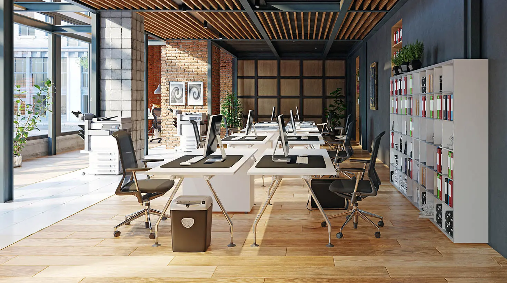

Bien-être

Agencement de bureau : les besoins de vos équipes sont importants !
Sur quoi repose un agencement de bureau réussi ? Tout d’abord sur des espaces de travail confortables. De l’espace d’accueil aux salles de réunion et aux espaces détente, adaptez vos espaces aux besoins des équipes. Malheureusement, certaines entreprises ne prêtent pas suffisamment attention à ces besoins – concentration, collaboration, apprentissage ou socialisation. D’où un impact négatif réel sur la créativité, la productivité et le bien-être au travail. Dans cet article, découvrez comment un agencement de bureau adapté peut faciliter les tâches quotidiennes de vos employés.
Quels sont les différents modes de travail ?
1 - Besoins de concentration : des postes de travail privés et insonorisés

Tout employé qui se consacre à des tâches complexes a besoin d’un environnement de travail facilitant la concentration. Pour leur permettre de se concentrer pendant de longues périodes, un mode de travail bien pensé doit :
éviter les interruptions ;
réduire les distractions sonores grâce à des panneaux muraux acoustiques, des cloisons de séparation et
des meubles insonorisants.
Pour satisfaire les besoins de concentration de vos employés, privilégiez donc des postes de travail privés et insonorisés. N’hésitez pas à impliquer vos employés en leur demandant si d’autres contrôles du bruit sont nécessaires. un bon équilibre entre espace partagé et espace privé est encore nécessaire pour améliorer l’engagement des employés.
Quels sont les différents modes de travail ?
2 - Besoins de collaboration : de petits espaces pour de petits groupes
Afin de favoriser un environnement de travail propice à la collaboration, votre entreprise peut :
créer des salles de conférence plus petites et plus privées ;
intégrer la technologie dans les salles de réunion ;
fournir aux grands départements des espaces de rassemblement dédiés, comme des coins salons acoustiques
pour les petits groupes.
L’idée est d’économiser de l’espace tout en créant une atmosphère favorable aux discussions plus
approfondies.
Quels sont les différents modes de travail ?
3 - Besoins d’apprentissage : chaque espace est un espace d'apprentissage

L’espace de travail influence directement les conditions d’apprentissage. Dans l’économie du savoir
actuelle, les entreprises doivent miser sur des espaces polyvalents. Employés comme stagiaires, tous
doivent pouvoir apprendre et développer au mieux leurs compétences professionnelles. Cela passe par :
l’intégration intelligente de la technologie aux espaces de travail ;
la conception des postes de travail comme espaces à la fois privatifs et collectifs.
Un mode de travail polyvalent suppose de pouvoir reconfigurer rapidement les espaces grâce au mobilier
modulable / modulaire. Et de passer ainsi d’un espace de réunion à un espace de débat ou de travail de
groupe.
4 - Besoins de socialisation : un employé sain dans un espace sain
L’épuisement professionnel des employés peut résulter directement d’une culture de travail toxique. Voire
d’un manque d’espace créant une sensation d’étouffement. C’est pourquoi il est important de concevoir un
environnement sain autour :
d’une salle de jeu / espace détente ;
d’une cafétéria et d’un restaurant ;
de canapés et mobilier de bonne qualité.
Quels sont les différents types d’agencement de bureau ?
On peut distinguer quatre grands types d’agencement de bureau : le bureau ouvert (open space), le bureau
cloisonné, le flex office et le bureau combiné. Pour faire le bon choix, plusieurs critères sont à
prendre en compte :
Quels sont vos objectifs (attirer les meilleurs talents, réduire les coûts, augmenter la productivité,
etc.) ?
Quelles sont vos ambitions (croissance, déménagement, changement de marque, etc.) ?
1 - Quels sont les avantages et inconvénients du bureau ouvert / open space ?
Le bureau ouvert est un agencement de bureau que l’on retrouve dans plusieurs entreprises de la Silicon Valley. Cette alternative peu coûteuse repose sur un positionnement des postes de travail dans diverses configurations. Une vision qui efface la distance hiérarchique, tout le monde étant assis ensemble dans le même bureau.
Du côté des avantages, le bureau ouvert facilite à la fois les échanges et la surveillance. Grâce à cette conception, il est possible d’ajouter de nouveaux espaces de travail à moindre coût. Une disposition très appréciée lorsqu’il s’agit de simplifier les opérations et accroître la productivité.
Du côté des inconvénients, les sources d’interruption et de distraction sont plus nombreuses, perturbant ainsi la concentration. C’est le cas lorsqu’un collègue intervient systématiquement oralement au lieu d’envoyer un e-mail. Certains employés peuvent se sentir mal à l’aise avec ce manque d’intimité. Alors que l’objectif est d’améliorer l’efficacité, le bureau ouvert peut avoir l’effet inverse en augmentant les erreurs.
2 - Quels sont les avantages et inconvénients du bureau cloisonné ?

Avec le bureau cloisonné, l’espace de travail se divise en plusieurs espaces individuels et privés. Pour créer ces cabines, on peut utiliser des cloisons, des montants de plafonds, des portes et des fenêtres.
Le principal avantage du bureau cloisonné, c’est que l’espace privé favorise la concentration et l’autonomie. Il garantit par ailleurs la sécurité des documents confidentiels. En revanche, il faut prévoir de l’espace pour les divisions (portes et passerelles). Le cloisonnement peut être un frein à la communication orale. Malgré tout, le bureau cloisonné reste l’agencement de bureau idéal pour les analystes et les programmeurs.
3 - Quels sont les avantages et inconvénients du flex office ?

Le flex office s’adresse aux travailleurs nomades sans lieu de travail fixe. Ainsi, vous pouvez attribuer des bureaux aux employés en fonction de leurs tâches et leur présence sur site.
Astuce : Grâce à des solutions de réservation de places en ligne et à distance (ex : ronspot), les employés peuvent consulter en temps réel si un bureau est disponible et le réserver d’un simple clic sur le plan interactif qui représente vos locaux à l'identique. Plusieurs entreprises optent désormais pour ce type de solution pour un retour au bureau en toute sécurité et pour s'adapter aux nouveaux modes de travail hybride.
Cet agencement de bureau a l’avantage d’encourager le réseautage. En contrepartie, les utilisateurs ne bénéficient d’aucune intimité. Le flex office s’accompagne aussi du risque de manque de sentiment d’appartenance à l’entreprise.
Ces articles pourraient vous plaire ?

Bien-être
Agencement de magasin : 5 astuces pour bien l’aménager
Vous êtes-vous déjà demandé pourquoi vous passiez plus de temps dans un magasin plutôt qu’un autre ? La réponse est bien souvent que vous vous y.....
En savoir plus
Bien-être
Home Office : On y croit encore plus qu’avant.
Télétravail, remote, home office… Il y a quelques années, la plupart d’entre nous ne connaissaient même pas ces termes. Aujourd’hui, ces néologismes.....
En savoir plusAménagement & Déménagement
Les étapes d’un projet d’aménagement intérieur
L’image véhiculée par les espaces de bureau d’une entreprise est fondamentale. Accueillir ses clients ou ses collaborateurs dans des bureaux.....
En savoir plus